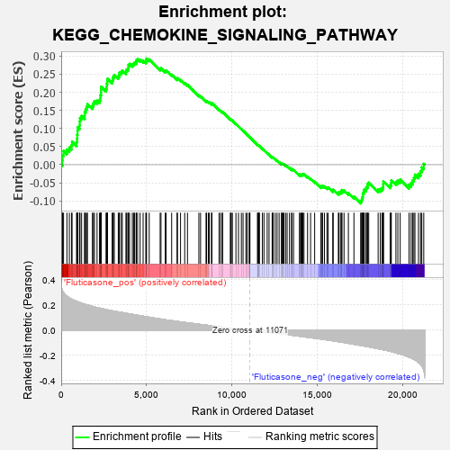
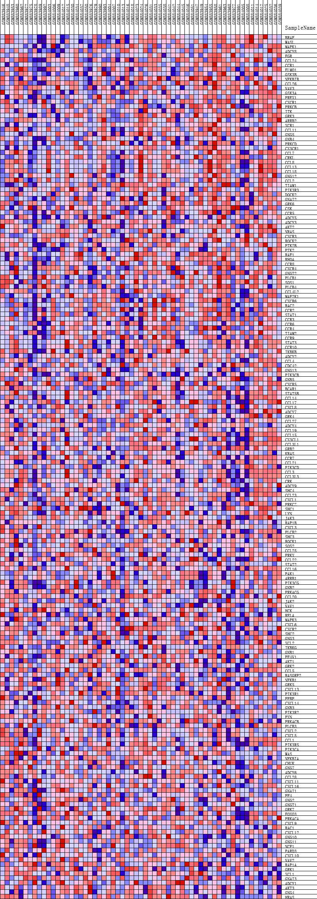
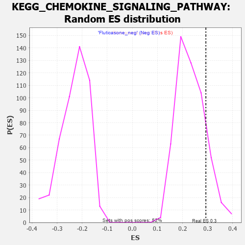

| | | Dataset | GSEA_expr_Flu.GSEA_timepoint.cls#Fluticasone |
| Phenotype | GSEA_timepoint.cls#Fluticasone |
| Upregulated in class | Fluticasone_pos |
| GeneSet | KEGG_CHEMOKINE_SIGNALING_PATHWAY |
| Enrichment Score (ES) | 0.2930021 |
| Normalized Enrichment Score (NES) | 1.2541533 |
| Nominal p-value | 0.14531548 |
| FDR q-value | 1.0 |
| FWER p-Value | 0.923 |
Table: GSEA Results Summary

Fig 1: Enrichment plot: KEGG_CHEMOKINE_SIGNALING_PATHWAY
Profile of the Running ES Score & Positions of GeneSet Members on the Rank Ordered List
| PROBE | DESCRIPTION
(from dataset) | GENE SYMBOL | GENE_TITLE | RANK IN GENE LIST | RANK METRIC SCORE | RUNNING ES | CORE ENRICHMENT | | 1 | BRAF | NA | | | 64 | 0.316 | 0.0122 | Yes |
| 2 | WASL | NA | | | 81 | 0.311 | 0.0264 | Yes |
| 3 | MAPK1 | NA | | | 138 | 0.300 | 0.0382 | Yes |
| 4 | ADCY8 | NA | | | 335 | 0.271 | 0.0419 | Yes |
| 5 | FGR | NA | | | 478 | 0.256 | 0.0475 | Yes |
| 6 | CCL24 | NA | | | 603 | 0.248 | 0.0536 | Yes |
| 7 | CCR1 | NA | | | 638 | 0.246 | 0.0638 | Yes |
| 8 | ELMO1 | NA | | | 900 | 0.230 | 0.0625 | Yes |
| 9 | GSK3B | NA | | | 929 | 0.228 | 0.0721 | Yes |
| 10 | NFKBIB | NA | | | 941 | 0.228 | 0.0826 | Yes |
| 11 | CCL26 | NA | | | 956 | 0.227 | 0.0928 | Yes |
| 12 | VAV3 | NA | | | 962 | 0.226 | 0.1035 | Yes |
| 13 | GSK3A | NA | | | 1076 | 0.220 | 0.1087 | Yes |
| 14 | PREX1 | NA | | | 1085 | 0.220 | 0.1189 | Yes |
| 15 | CXCR1 | NA | | | 1101 | 0.219 | 0.1287 | Yes |
| 16 | PRKCB | NA | | | 1197 | 0.214 | 0.1345 | Yes |
| 17 | ITK | NA | | | 1374 | 0.207 | 0.1361 | Yes |
| 18 | GRK3 | NA | | | 1379 | 0.207 | 0.1459 | Yes |
| 19 | ARRB2 | NA | | | 1433 | 0.204 | 0.1532 | Yes |
| 20 | XCR1 | NA | | | 1490 | 0.202 | 0.1602 | Yes |
| 21 | CCL11 | NA | | | 1540 | 0.200 | 0.1675 | Yes |
| 22 | GNG5 | NA | | | 1829 | 0.189 | 0.1630 | Yes |
| 23 | GNB4 | NA | | | 1889 | 0.187 | 0.1692 | Yes |
| 24 | PRKCD | NA | | | 1948 | 0.184 | 0.1753 | Yes |
| 25 | CX3CR1 | NA | | | 2102 | 0.179 | 0.1766 | Yes |
| 26 | CCL7 | NA | | | 2246 | 0.175 | 0.1783 | Yes |
| 27 | CRKL | NA | | | 2297 | 0.173 | 0.1843 | Yes |
| 28 | CCL8 | NA | | | 2301 | 0.173 | 0.1925 | Yes |
| 29 | CCL13 | NA | | | 2331 | 0.173 | 0.1994 | Yes |
| 30 | CCL18 | NA | | | 2337 | 0.172 | 0.2075 | Yes |
| 31 | GNG12 | NA | | | 2344 | 0.172 | 0.2155 | Yes |
| 32 | CCL2 | NA | | | 2628 | 0.163 | 0.2099 | Yes |
| 33 | TIAM1 | NA | | | 2670 | 0.162 | 0.2158 | Yes |
| 34 | PIK3R3 | NA | | | 2676 | 0.162 | 0.2233 | Yes |
| 35 | DOCK2 | NA | | | 2703 | 0.161 | 0.2299 | Yes |
| 36 | GNAI2 | NA | | | 2712 | 0.161 | 0.2372 | Yes |
| 37 | GRK6 | NA | | | 2988 | 0.154 | 0.2316 | Yes |
| 38 | CSK | NA | | | 3023 | 0.153 | 0.2373 | Yes |
| 39 | CCR5 | NA | | | 3056 | 0.152 | 0.2431 | Yes |
| 40 | ADCY5 | NA | | | 3112 | 0.151 | 0.2478 | Yes |
| 41 | ADCY3 | NA | | | 3346 | 0.145 | 0.2437 | Yes |
| 42 | AKT2 | NA | | | 3402 | 0.144 | 0.2480 | Yes |
| 43 | NRAS | NA | | | 3417 | 0.143 | 0.2543 | Yes |
| 44 | CXCR3 | NA | | | 3527 | 0.141 | 0.2559 | Yes |
| 45 | ROCK2 | NA | | | 3581 | 0.140 | 0.2601 | Yes |
| 46 | PTK2B | NA | | | 3798 | 0.135 | 0.2564 | Yes |
| 47 | PTK2 | NA | | | 3817 | 0.134 | 0.2620 | Yes |
| 48 | RAF1 | NA | | | 3903 | 0.132 | 0.2643 | Yes |
| 49 | RHOA | NA | | | 3938 | 0.131 | 0.2690 | Yes |
| 50 | CCR8 | NA | | | 3941 | 0.131 | 0.2752 | Yes |
| 51 | CXCR4 | NA | | | 4007 | 0.129 | 0.2783 | Yes |
| 52 | GNGT2 | NA | | | 4170 | 0.125 | 0.2767 | Yes |
| 53 | PLCB1 | NA | | | 4243 | 0.124 | 0.2792 | Yes |
| 54 | SOS1 | NA | | | 4304 | 0.122 | 0.2823 | Yes |
| 55 | PLCB4 | NA | | | 4394 | 0.120 | 0.2838 | Yes |
| 56 | CCL4L2 | NA | | | 4406 | 0.120 | 0.2891 | Yes |
| 57 | MAP2K1 | NA | | | 4480 | 0.118 | 0.2913 | Yes |
| 58 | CXCR6 | NA | | | 4626 | 0.115 | 0.2900 | Yes |
| 59 | RAC2 | NA | | | 4802 | 0.111 | 0.2870 | Yes |
| 60 | CCR2 | NA | | | 4961 | 0.107 | 0.2847 | Yes |
| 61 | STAT1 | NA | | | 4985 | 0.106 | 0.2887 | Yes |
| 62 | CCR3 | NA | | | 5003 | 0.106 | 0.2930 | Yes |
| 63 | CCR6 | NA | | | 5160 | 0.103 | 0.2906 | No |
| 64 | CCR4 | NA | | | 5801 | 0.089 | 0.2645 | No |
| 65 | TIAM2 | NA | | | 5850 | 0.088 | 0.2665 | No |
| 66 | CCR9 | NA | | | 6102 | 0.082 | 0.2586 | No |
| 67 | STAT3 | NA | | | 6148 | 0.081 | 0.2603 | No |
| 68 | CCR10 | NA | | | 6476 | 0.075 | 0.2485 | No |
| 69 | IKBKB | NA | | | 6792 | 0.069 | 0.2369 | No |
| 70 | ADCY2 | NA | | | 6816 | 0.069 | 0.2391 | No |
| 71 | CCL4 | NA | | | 6996 | 0.065 | 0.2338 | No |
| 72 | CDC42 | NA | | | 7240 | 0.061 | 0.2253 | No |
| 73 | GNG13 | NA | | | 7403 | 0.058 | 0.2204 | No |
| 74 | PIK3CB | NA | | | 8070 | 0.047 | 0.1911 | No |
| 75 | GNB5 | NA | | | 8170 | 0.045 | 0.1886 | No |
| 76 | CXCR5 | NA | | | 8491 | 0.040 | 0.1754 | No |
| 77 | BCAR1 | NA | | | 8521 | 0.040 | 0.1760 | No |
| 78 | STAT5B | NA | | | 8623 | 0.038 | 0.1730 | No |
| 79 | CCL14 | NA | | | 8682 | 0.037 | 0.1720 | No |
| 80 | CCL17 | NA | | | 8812 | 0.035 | 0.1676 | No |
| 81 | CXCL8 | NA | | | 8830 | 0.035 | 0.1685 | No |
| 82 | ADCY7 | NA | | | 8836 | 0.035 | 0.1699 | No |
| 83 | GRK4 | NA | | | 9255 | 0.028 | 0.1514 | No |
| 84 | CCL27 | NA | | | 9343 | 0.026 | 0.1486 | No |
| 85 | ADCY4 | NA | | | 9443 | 0.025 | 0.1451 | No |
| 86 | CCL19 | NA | | | 9466 | 0.024 | 0.1452 | No |
| 87 | CCL15 | NA | | | 9918 | 0.017 | 0.1247 | No |
| 88 | CX3CL1 | NA | | | 9937 | 0.017 | 0.1246 | No |
| 89 | CCL3L1 | NA | | | 9974 | 0.016 | 0.1237 | No |
| 90 | GRB2 | NA | | | 10036 | 0.015 | 0.1215 | No |
| 91 | KRAS | NA | | | 10243 | 0.012 | 0.1124 | No |
| 92 | CCR7 | NA | | | 10393 | 0.010 | 0.1058 | No |
| 93 | CCL21 | NA | | | 10562 | 0.007 | 0.0982 | No |
| 94 | PIK3CD | NA | | | 10661 | 0.006 | 0.0938 | No |
| 95 | CCL3 | NA | | | 10826 | 0.003 | 0.0862 | No |
| 96 | CCL3L3 | NA | | | 10901 | 0.003 | 0.0829 | No |
| 97 | CRK | NA | | | 11023 | 0.001 | 0.0772 | No |
| 98 | ADCY9 | NA | | | 11042 | 0.000 | 0.0763 | No |
| 99 | SHC4 | NA | | | 11051 | 0.000 | 0.0760 | No |
| 100 | CCL23 | NA | | | 11064 | 0.000 | 0.0754 | No |
| 101 | CXCL1 | NA | | | 11504 | -0.007 | 0.0549 | No |
| 102 | PRKCZ | NA | | | 11542 | -0.007 | 0.0535 | No |
| 103 | SHC1 | NA | | | 11552 | -0.007 | 0.0535 | No |
| 104 | LYN | NA | | | 11580 | -0.008 | 0.0526 | No |
| 105 | JAK3 | NA | | | 11600 | -0.008 | 0.0521 | No |
| 106 | RAP1B | NA | | | 11620 | -0.008 | 0.0516 | No |
| 107 | CXCL3 | NA | | | 11794 | -0.011 | 0.0439 | No |
| 108 | PLCB2 | NA | | | 11887 | -0.013 | 0.0402 | No |
| 109 | SHC3 | NA | | | 12076 | -0.016 | 0.0320 | No |
| 110 | ROCK1 | NA | | | 12185 | -0.018 | 0.0278 | No |
| 111 | SOS2 | NA | | | 12366 | -0.021 | 0.0202 | No |
| 112 | CCL25 | NA | | | 12401 | -0.021 | 0.0196 | No |
| 113 | PRKX | NA | | | 12430 | -0.022 | 0.0194 | No |
| 114 | CCL22 | NA | | | 12547 | -0.023 | 0.0150 | No |
| 115 | STAT2 | NA | | | 12656 | -0.025 | 0.0111 | No |
| 116 | CCL16 | NA | | | 12776 | -0.027 | 0.0068 | No |
| 117 | PAK1 | NA | | | 12912 | -0.030 | 0.0018 | No |
| 118 | ARRB1 | NA | | | 12936 | -0.030 | 0.0022 | No |
| 119 | PIK3CG | NA | | | 12963 | -0.031 | 0.0024 | No |
| 120 | GNB2 | NA | | | 12999 | -0.031 | 0.0023 | No |
| 121 | PRKACG | NA | | | 13059 | -0.032 | 0.0010 | No |
| 122 | CCL20 | NA | | | 13157 | -0.034 | -0.0019 | No |
| 123 | JAK2 | NA | | | 13246 | -0.035 | -0.0044 | No |
| 124 | VAV1 | NA | | | 13384 | -0.038 | -0.0091 | No |
| 125 | HCK | NA | | | 13512 | -0.040 | -0.0132 | No |
| 126 | RELA | NA | | | 13513 | -0.040 | -0.0113 | No |
| 127 | MAPK3 | NA | | | 13622 | -0.042 | -0.0144 | No |
| 128 | CXCL6 | NA | | | 13975 | -0.048 | -0.0287 | No |
| 129 | CXCR2 | NA | | | 13984 | -0.048 | -0.0268 | No |
| 130 | SHC2 | NA | | | 14063 | -0.049 | -0.0281 | No |
| 131 | GNG3 | NA | | | 14118 | -0.050 | -0.0282 | No |
| 132 | XCL2 | NA | | | 14130 | -0.051 | -0.0263 | No |
| 133 | IKBKG | NA | | | 14163 | -0.051 | -0.0253 | No |
| 134 | GNB1 | NA | | | 14233 | -0.052 | -0.0261 | No |
| 135 | PF4V1 | NA | | | 14443 | -0.057 | -0.0333 | No |
| 136 | AKT1 | NA | | | 14620 | -0.060 | -0.0387 | No |
| 137 | GRK2 | NA | | | 14859 | -0.064 | -0.0469 | No |
| 138 | CCL5 | NA | | | 15229 | -0.070 | -0.0610 | No |
| 139 | RASGRP2 | NA | | | 15257 | -0.071 | -0.0589 | No |
| 140 | NFKB1 | NA | | | 15324 | -0.072 | -0.0586 | No |
| 141 | GRK5 | NA | | | 15431 | -0.074 | -0.0600 | No |
| 142 | CXCL13 | NA | | | 15579 | -0.077 | -0.0633 | No |
| 143 | PIK3R1 | NA | | | 15652 | -0.079 | -0.0629 | No |
| 144 | PPBP | NA | | | 15920 | -0.084 | -0.0715 | No |
| 145 | CXCL14 | NA | | | 15947 | -0.085 | -0.0686 | No |
| 146 | GNB3 | NA | | | 16248 | -0.091 | -0.0784 | No |
| 147 | PIK3R2 | NA | | | 16280 | -0.092 | -0.0755 | No |
| 148 | PXN | NA | | | 16373 | -0.094 | -0.0754 | No |
| 149 | PRKACB | NA | | | 16451 | -0.095 | -0.0744 | No |
| 150 | PLCB3 | NA | | | 16453 | -0.095 | -0.0699 | No |
| 151 | CXCL2 | NA | | | 16581 | -0.098 | -0.0711 | No |
| 152 | CXCL5 | NA | | | 16836 | -0.104 | -0.0782 | No |
| 153 | CCL1 | NA | | | 17162 | -0.112 | -0.0882 | No |
| 154 | PIK3R5 | NA | | | 17555 | -0.121 | -0.1009 | No |
| 155 | PIK3CA | NA | | | 17611 | -0.123 | -0.0976 | No |
| 156 | WAS | NA | | | 17633 | -0.123 | -0.0927 | No |
| 157 | NFKBIA | NA | | | 17672 | -0.124 | -0.0885 | No |
| 158 | CHUK | NA | | | 17684 | -0.124 | -0.0830 | No |
| 159 | GNG7 | NA | | | 17689 | -0.124 | -0.0772 | No |
| 160 | ADCY6 | NA | | | 17755 | -0.126 | -0.0743 | No |
| 161 | CCL28 | NA | | | 17765 | -0.126 | -0.0686 | No |
| 162 | CXCL11 | NA | | | 17873 | -0.128 | -0.0675 | No |
| 163 | CXCL16 | NA | | | 17888 | -0.129 | -0.0620 | No |
| 164 | GNAI1 | NA | | | 17954 | -0.130 | -0.0588 | No |
| 165 | PF4 | NA | | | 17963 | -0.131 | -0.0529 | No |
| 166 | GNG2 | NA | | | 18028 | -0.132 | -0.0496 | No |
| 167 | GNGT1 | NA | | | 18580 | -0.147 | -0.0686 | No |
| 168 | GRK7 | NA | | | 18705 | -0.151 | -0.0672 | No |
| 169 | FOXO3 | NA | | | 18805 | -0.153 | -0.0645 | No |
| 170 | PRKACA | NA | | | 18874 | -0.156 | -0.0603 | No |
| 171 | CXCL9 | NA | | | 18880 | -0.156 | -0.0530 | No |
| 172 | RAC1 | NA | | | 18889 | -0.156 | -0.0459 | No |
| 173 | CXCL12 | NA | | | 19287 | -0.168 | -0.0566 | No |
| 174 | GNG10 | NA | | | 19338 | -0.169 | -0.0508 | No |
| 175 | GNG11 | NA | | | 19352 | -0.170 | -0.0433 | No |
| 176 | NCF1 | NA | | | 19622 | -0.180 | -0.0473 | No |
| 177 | PARD3 | NA | | | 19737 | -0.185 | -0.0438 | No |
| 178 | CXCL10 | NA | | | 19873 | -0.189 | -0.0411 | No |
| 179 | VAV2 | NA | | | 20394 | -0.215 | -0.0554 | No |
| 180 | RAP1A | NA | | | 20513 | -0.221 | -0.0504 | No |
| 181 | GRK1 | NA | | | 20600 | -0.226 | -0.0436 | No |
| 182 | XCL1 | NA | | | 20676 | -0.232 | -0.0360 | No |
| 183 | GNAI3 | NA | | | 20738 | -0.236 | -0.0275 | No |
| 184 | ADCY1 | NA | | | 20946 | -0.257 | -0.0249 | No |
| 185 | AKT3 | NA | | | 21067 | -0.271 | -0.0176 | No |
| 186 | GNG4 | NA | | | 21139 | -0.283 | -0.0073 | No |
| 187 | HRAS | NA | | | 21255 | -0.316 | 0.0024 | No |
Table: GSEA details [plain text format]

Fig 2: KEGG_CHEMOKINE_SIGNALING_PATHWAY
Blue-Pink O' Gram in the Space of the Analyzed GeneSet

Fig 3: KEGG_CHEMOKINE_SIGNALING_PATHWAY: Random ES distribution
Gene set null distribution of ES for KEGG_CHEMOKINE_SIGNALING_PATHWAY